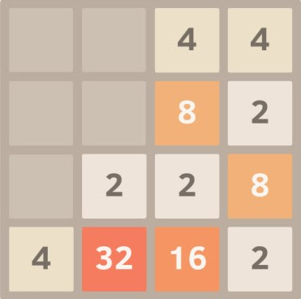

Player engages in a challenging 4x4 grid, manipulating tiles that
represent powers of 2.
The game begins with the computer randomly generating a tile with the
value of 2 within the grid.
The player can slide the tiles in four possible directions: Left, Right,
Up, or Down, depending on the available space.
When two tiles of the same value collide, they merge into a new tile,
doubling in value.
Each successful merge increases the player's score.
As the player continues making moves, they have the option to quit the
game at any time by pressing the key "e". Upon quitting, the player can
review their current score and the sequence of moves they made.

To Access this game simulated in Cpp click on the below button